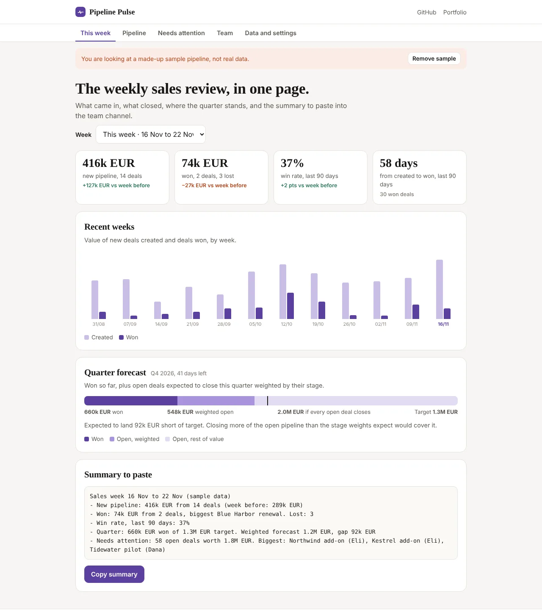

The problem
The CRM holds the data but not the weekly view: what came in, what closed, where the quarter lands, and which deals are going quiet. Most teams have no BI tool for it.

What it does
- Import. Any CSV, with column matching and a preview. European number and date formats handled.
- This week. New pipeline, won and lost, win rate and days to close, against the week before, plus a 12-week chart.
- Forecast. Won plus stage-weighted open deals against the quarter target, with the gap in a sentence.
- Attention. Open deals with no recent activity or a passed close date, biggest first.
- Team and summary. Per-owner pipeline, wins and win rate, and a six-line summary to paste.
Decisions
Decision
CSV first, not an integration
Works with any CRM today. A weekly export fits a weekly review.
Decision
Stage weights the user can edit
Anyone can explain the forecast in one sentence. The best case is shown next to it.
Decision
Data stays in the browser
Deal names and amounts are sensitive, so nothing is uploaded.
What I would do next
- A direct HubSpot or Salesforce import.
- Stage weights learned from the team's own history.
- What moved stage or slipped since last week.
No usage data yet, so no findings.